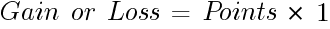
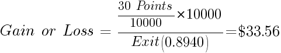
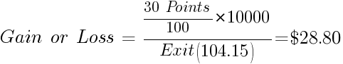
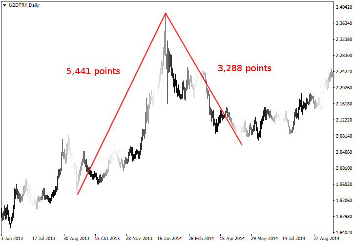

<!DOCTYPE html>
<html>
</html>
<head>
  <meta charset="utf-8">
  <meta http-equiv="X-UA-Compatible" content="IE=edge">
  <title>外汇站（fx-z.com） - 点值</title>
  <meta name="description" content="">
  <meta name="viewport" content="width=device-width, initial-scale=1">
  <meta name="robots" content="all,follow">
  <!-- Bootstrap CSS-->
  <link rel="stylesheet" href="vendor/bootstrap/css/bootstrap.min.css">
  <!-- Font Awesome CSS-->
  <link rel="stylesheet" href="vendor/font-awesome/css/font-awesome.min.css">
  <!-- Google fonts - Roboto-->
  <link rel="stylesheet" href="https://fonts.googleapis.com/css?family=Roboto:400,300,700,400italic">
  <!-- owl carousel-->
  <link rel="stylesheet" href="vendor/owl.carousel/assets/owl.carousel.css">
  <link rel="stylesheet" href="vendor/owl.carousel/assets/owl.theme.default.css">
  <!-- theme stylesheet-->
  <link rel="stylesheet" href="css/style.default.css" id="theme-stylesheet">
  <!-- Custom stylesheet - for your changes-->
  <link rel="stylesheet" href="css/custom.css">
  <!-- Favicon-->
  <link rel="shortcut icon" href="img/favicon.png">
  <!-- Tweaks for older IEs--><!--[if lt IE 9]>
    <script src="https://oss.maxcdn.com/html5shiv/3.7.3/html5shiv.min.js"></script>
    <script src="https://oss.maxcdn.com/respond/1.4.2/respond.min.js"></script><![endif]-->
</head>
<body>
  <div id="all">
    <div class="container-fluid">
      <div class="row row-offcanvas row-offcanvas-left"> 
        <!--   *** SIDEBAR ***-->
        <div id="sidebar" class="col-md-4 col-lg-3 sidebar-offcanvas">
          <div class="sidebar-content">
            <h1 class="sidebar-heading"> <a href="https://fx-z.com">fx-z.com</a></h1>
            <p class="sidebar-p">介绍外汇相关的基本知识，告诉您如何进行自己的技术面和基本面分析，讲解先进的交易理念，并且为您阐述失败交易者与专业交易者之间的真正区别。 </p>
            <p class="sidebar-p">通过这些课程的学习，您将学会如何根据自己的优势来应用情绪分析，还将了解真实世界的事件会对货币汇率产生什么影响，央行在外汇市场中所发挥的作用，以及交易者在颇受欢迎的即期外汇交易中有哪些选择方案。 </p>
            <ul class="sidebar-menu">
                <!-- Link-->
                <li class="sidebar-item"><a href="https://fx-z.com" class="sidebar-link">首页</a></li>
                <!-- Link-->
                <li class="sidebar-item"><a href="cihui.html" class="sidebar-link">外汇词汇</a></li>
                <!-- Link-->
                <li class="sidebar-item"><a href="ebook.html" class="sidebar-link">获取外汇电子书</a></li>
            </ul>
            <p class="social"><a href="https://www.forextimechina.com.cn/zh?form=IZIN" target="_blank"data-animate-hover="pulse" class="external facebook"><i class="fa fa-eur"></i></a><a href="https://www.forextimechina.com.cn/zh?form=IZIN" target="_blank" data-animate-hover="pulse" class="external gplus"><i class="fa fa-gbp"></i></a><a href="https://www.forextimechina.com.cn/zh?form=IZIN" target="_blank" data-animate-hover="pulse" class="external twitter"><i class="fa fa-rmb"></i></a><a href="https://www.forextimechina.com.cn/zh?form=IZIN" target="_blank" title="" class="external instagram"><i class="fa fa-dollar"></i></a><a href="https://www.forextimechina.com.cn/zh?form=IZIN" target="_blank" data-animate-hover="pulse" class="email"><i class="fa fa-money"></i></a></p>
            <div class="copyright text-center text-md-left">
             
              
            </div>
          </div>
        </div>
        <!--   *** SIDEBAR END ***  -->
        <!--   *** DETAIL ***-->
        <div class="col-md-8 col-lg-9 content-column white-background">
          <div class="small-navbar d-flex d-md-none">
            <button type="button" data-toggle="offcanvas" class="btn btn-outline-primary"> <i class="fa fa-align-left mr-2"></i>菜单</button>
            <h1 class="small-navbar-heading"> <a href="https://fx-z.com/1-10.html">下一篇 </a></h1>
          </div>
          <div class="row">
            <div class="col-xl-10">
              <div class="content-column-content">
                <h1>点值</h1>
           <p>
    一点是指外汇中能够交易的最小单位。“点”这个词源于橙子等水果的小种子，虽然还有些人将点定义为“百分点”，因为一点等于 百分之一的 1/100。
</p>
<p>
    确切地说，期货中最小的可交易单位是一“跳动点”，在股票中是一“点”，但实际上，许多外汇交易者并不说“点值”，而是说“点数”。如果交易者使用“基点”，而不是点数或点值，那么您绝对可以判断该交易者是一位新手。基点是值股票利率，而不是外汇利率。点值一词再次流行于 90 年代末零售即期外汇得到普及之时。
</p>
<p>
    按照传统做法，外汇汇率被校准到小数点后四位，所以 EUR/USD 的报价可能是 1.3801。最后一位数 1 即为 1 点。21 世纪初期，经纪商开始用小数点值或小数点后五位数来报价，例如 1.38015。小数点值是指十分之一点。经纪商宣传小数点值的目的是，允许交易者获得更小的买入/卖出价点差并利用更小的价格走势，但小数点值也吸引了仅有少量交易资金入市的交易者，并且促成了高速算法交易者。执行足够的盈利交易，赚取一个小数点值后，您很快就会讨论真正的资金。小数点值的另一种高速用户是点差交易者。
</p>
<p>
    零售电子平台引入小数点值报价后，专业平台抱怨颇多，且不太情愿地效仿之。许多专业交易者拒绝使用小数点值，尤其是在 GBP 交易中。至少大型即期数据提供商——路透社——并未采用小数点值。小数点值显示于路透社报价屏幕上，但是当您将数据下载至个人计算机上时，报价的小数点后仍有五位数，但最后一位数是 0。财经媒体于 2013 年初报道，外汇报价惯例将重回小数点后四位报价，但显然，这只是一些委员会的头脑风暴，而且后续报道很快石沉大海。
</p>
<p>
    <strong>什么是 1 点的价值？</strong>
</p>
<p>
    1 点的价值完全取决于采用哪种报价方法。在欧元/美元等按照美国报价惯例报价的货币中，1 点在标准合约中价值 $10，而且每个小数点价值 $1。在迷你合约中，每点价值 $1，每个小数点值价值 10 美分。其他以这种方式报价的货币包括 GBP、CAD、AUD 和 NZD。
</p>
<p>
    当报价惯例为 USD/CHF 和 USD/JPY 等欧洲惯例时，1 点的价值以第二种货币计价。USD/CHF 中的 1 点是指 10 CHF；如果您将它换算为美元，您需要使用平仓时的汇率。
</p>
<p>
    例如，您以 1.6556 买入 1 迷你合约 GBP/USD ，然后以 1.6586 卖出并获得 30 点收益。您的电子表格将使用以下公式：
</p>

<p>
    换言之，迷你合约（$10,000）中的 1 点价值 $1，而且它的计算非常简单——您赚取了 $30.00。如果您交易规模为 $100,000 的合约，您的收益显然会高十倍。
</p>
<p>
    不过，如果您交易 USD/CHF，您赚取或亏损的点数以瑞郎计价；如果您以美元计算损益，您需要将瑞郎换算为美元。例如，您以 0.8910 买入 1 迷你合约 USD/CHF，然后以 0.8940 卖出并获得 30 点收益。
</p>
<p>
    在这种情况下，您的电子表格公式为：
</p>

<p>
    日元未采用小数点 4 位或 5 位的惯例；它通常采用小数点后两位数，然后再增加一个尾数点。如果美元/日元的交易价为 103.985，则点值为 8，尾数点为 5。由于交易量不同，其收益/亏损的计算与瑞士法郎的计算略有不同。例如，您以 103.85 买入 1 迷你合约 USD/JPY，然后以 104.15 卖出并获得 30 点收益。您的电子表格公式为：
</p>

<p>
    通常，如果您交易标准合约，则一点大约价值（非常接近）$10。如果您交易迷你合约，则一点大约价值 $1。不过，请不要忽略对小额费用的追踪。如刚才所示，30 点瑞士法郎比 $30 多 $3.56，而日元相应地少 $1.20。
</p>
<p>
    外来货币点值
</p>
<p>
    外来货币包括南非兰特（ZAR）、墨西哥比索（MXN）、港币（HKD）、北欧货币（瑞典克朗 SEK、挪威克朗 NOK 和丹麦克朗 DKK）以及一系列新兴市场货币，如土耳其里拉（TRY）、印度卢比（INR）和印尼卢比（IDR）等。此外，您还可以将俄罗斯卢布（RUB）和阿根廷比索（ARS）纳入外来货币的范围。
</p>
<p>
    如今，有些网站将任何不包含美元的货币对均称为“外来”货币，但其实这不是标准用法，而且容易制造混淆。EUR/GBP 等不包含美元的货币对被称为“交叉货币”。这种货币对中没有任何“外来”货币！此外，虽然货币对 USD/ZAR 确实包含美元，但它确实是“外来”货币对。
</p>
<p>
    请注意，当货币对中有两种外来货币时，例如 ZAR/TRY（南非兰特对土耳其里拉），这种货币属于“外来交叉货币”。
</p>
<p>
    “外来”一词或许是用来指流动性较低，且交易量不如主要货币的货币，例如 EUR/USD。货币被称为主要货币的原因在于它们的活跃性——高成交量——以及强流动性。如上所述，当美元是货币对中的第二位货币时，您通常可以将点值默认为每微型手 $0.10，每迷你手 $1 以及每标准手 $10。当美元是货币对中的第一位货币时，买入或卖出的金额都是以另一种货币为基础，您必需将这些结算金额换算为美元。例如，土耳其里拉对美元大部分被报价为 USD/TRY，而里拉对欧元大部分被报价为 EUR/TRY。
</p>
<p>
    因此，大多数外来货币对的点值价值是指第二种货币的点值。如要了解点值价值，最简便的方法是去经纪商的网站或平台上查看。为此，您还可以使用一款特殊的点值价值计算器，但您最好要了解点值价值始终以第二位货币计价的原则，因此 USD/TRY 的点值价值是以土耳其里拉计价。若要让点值价值以美元计价，您必需按现行汇率计算。假设某种货币对的报价精确到小数点后四位，则标准合约（除以 10 得到更小的手数）的示例为：
</p>
<p>
    USD/TRY：100,000 × 0.0001 = 每点 10 土耳其里拉/ USD/TRY 当前汇率 2.1127 =每点 $4.7333。
</p>
<p>
    GBP/TRY：100,000 × 0.0001 = 每点 10 土耳其里拉/ GBP/TRY 当前汇率 3.5441 = 每点 £2.8216。
</p>
<p>
    我们提供一款便捷的点值价值计算器，可适用于任何货币对，且允许您根据账户货币、交易货币和头寸大小来自定义设置。
</p>
<p>
    外来货币的重要之处在于，它的点值价值往往比主要货币的点值价值小很多，例如前文土耳其里拉的案例所述。这意味着，您可以用相同的起始资金交易更多或更大的手数。
</p>
<p>
    外来货币的另一个重要之处在于，一旦出现波动，该走势将像火箭一样快速。与之相比，EUR/USD 看起来颇为稳定。请查看以下 2013-2014 年 USD/TRY 图表。从最低点到最高点的首个涨势包括 5,441 点，从最高点到最低点的跌势包括 3,288 点，而且这两种走势相对整齐，虽然第二种走势在恢复跌势之前盘整了一顿时间。在相同日期 欧元/美元的首个涨势中，净收益点数只有 213。
</p>
<p>
    2013-2014 年 USD/TRY 的上涨和下跌
</p>
<p>
    外来货币的趋势是否比主要货币的趋势更强？是的，当有危机情况影响货币时是这样。
</p>
<p>
    而且，当新兴市场出现危机时，它还经常——但不是每次——影响其他外来货币。由于点值相对较低且风险小于主要货币，您可以将第二种外来货币加入头寸中，。但是，请谨慎操作！如上图所示，最高点之后，您也可能获得灾难性的峰值。
</p>
<p>
    <br/>
</p>
<p>
    <br/>
</p>
              </div>
            </div>
          </div>
        </div>
      </div>
    </div>
  </div>
  <!-- JavaScript files-->
  <script src="vendor/jquery/jquery.min.js"></script>
  <script src="vendor/popper.js/umd/popper.min.js"> </script>
  <script src="vendor/bootstrap/js/bootstrap.min.js"></script>
  <script src="vendor/jquery.cookie/jquery.cookie.js"> </script>
  <script src="vendor/owl.carousel/owl.carousel.min.js"></script>
  <script src="vendor/masonry-layout/masonry.pkgd.min.js"></script>
  <script src="js/front.js"></script>
</body>